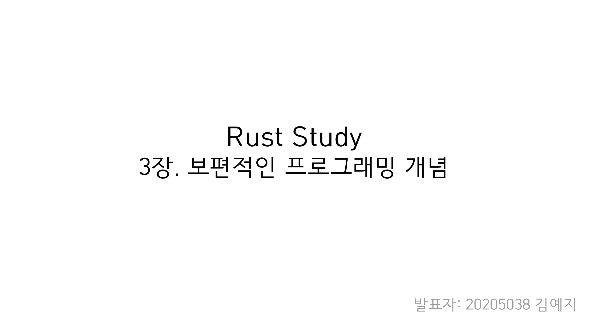
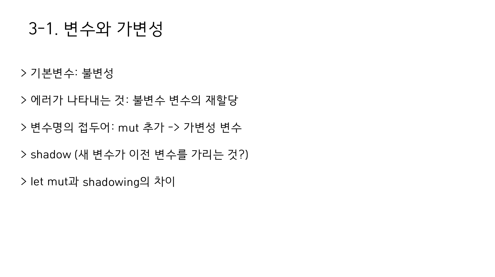
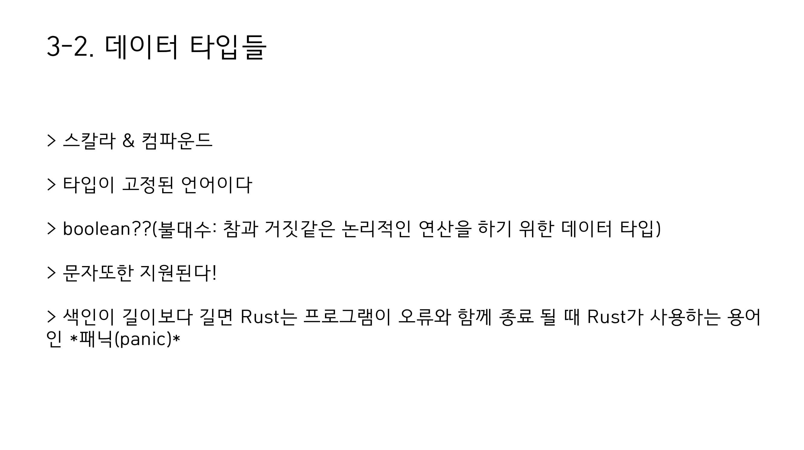
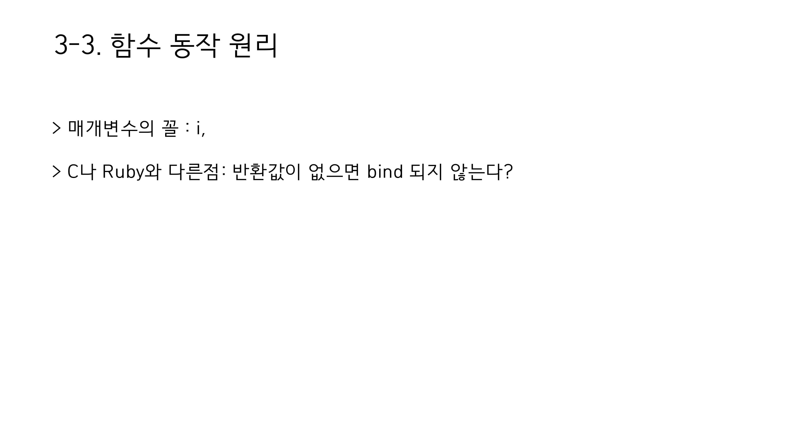
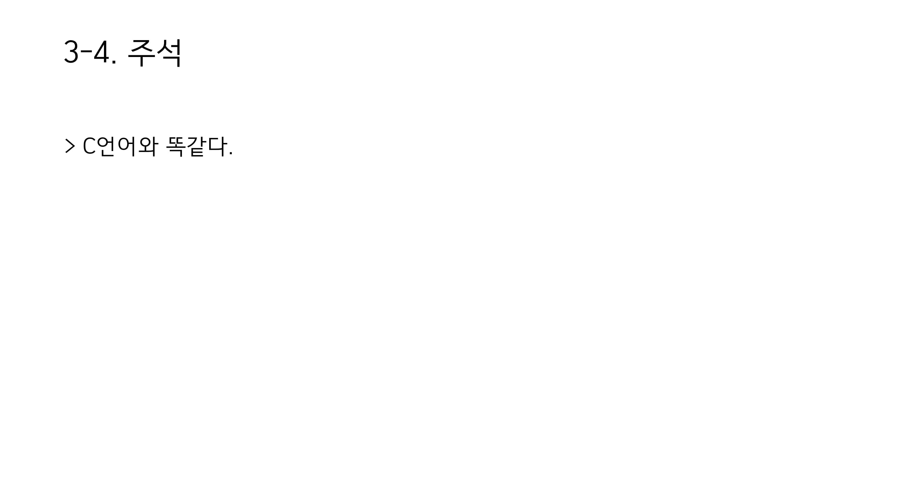
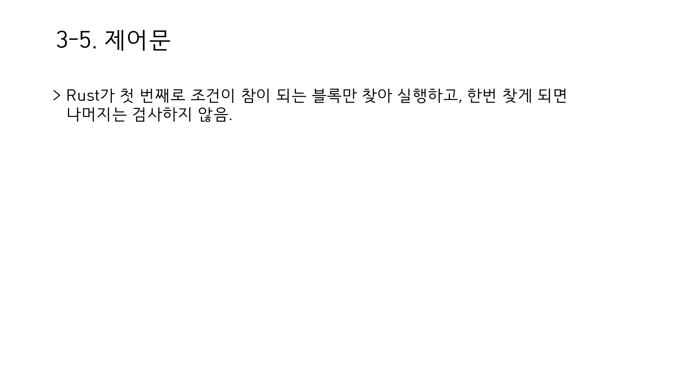
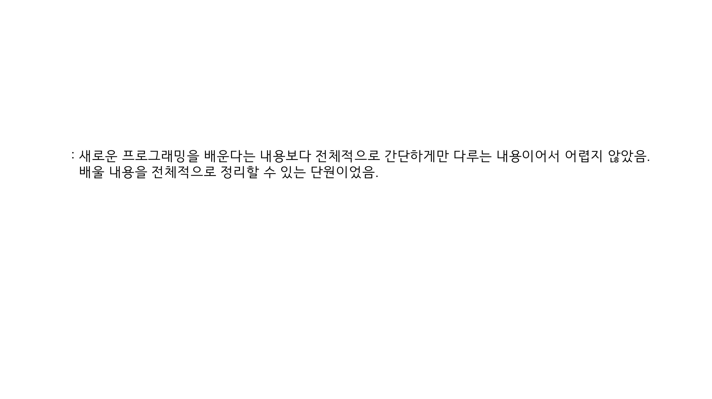

보편적 프로그래밍 개념
2020년 9월 15일 김예지


error[E0384]: cannot assign twice to immutable variable 'x: 불변 변수에 할당 시도시 나타나는 에러mut은아예 값을 바꾼다면,shadowing은 값은 그대로 있으나 새로운 값으로 연결하는 것

panic!은 rust에서 제공하는 매크로 중 하나로, 실패 메세지를 출력하고 스택 메모리를 정리한 후 정지하는 명령어이다. 이 경우 인덱스 값을 넘어선 범위를 접근하려 했기 때문에panic!이 호출된 것이다.- 타입이 고정되어 있긴 하지만 타입 추론이 강력하여, 변수 선언시 종류를 굳이 선언 안해도 됨.
boolean은 논리 연산(불 대수)를 하기 위한 연산자로, C언어에서는 그냥 0과 1을 사용하고, 대부분의 언어에서는boolean이 아니어도 조건문에 활용할 수 있지만, rust는 boolean을 반환하는 것만 조건문을 통해 받는다.

- 반환 값이 없다는 의미 : 대부분의 언어에서,
=를 실행하면 대입되는 값을 반환한다.x = y = 6하면 둘 다 6이라는 값이 들어가는 것처럼. 하지만 rust의 경우=는 아무것도 반환하지 않으므로 이렇게 묶을 수 없다.

- 문서화 주석을 제공하긴 하나 이 스터디에서 다루는 내용은 아님.

- 다른 언어도
if ... else if ... else로 구성된 블럭이면 마찬가지 - 조건문에는 반드시
boolean리턴 값이 들어가야 한다. - 더 정교한 처리를 원하면
match를 사용하자.
반복문
- 루프 자체에서 값을 리턴할 수 있다.
- 특정 조건은
while을 통해서 루프 가능하다. loop문으로 무한 루프를 돌릴 수 있다.for문을 통해 iterator를 비롯해 컬렉션들의 각 요소를 반복 시킬 수 있다.
